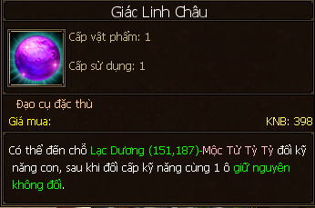
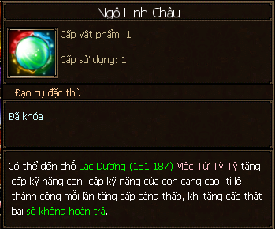

Con Cái¶
- Hệ thống con cái được ra mắt vào đầu năm 2015 (http://ttl3d.zing.vn/su-kien/chi-anh-hung/he-thong-con-cai-cap-nhat.html). Mặc dù cũng khá lâu rồi nhưng hôm nay mình cũng xin phép ghi lại các điểm chính của tính năng này.
- Hệ thống con cái ra đời với hai mục đích chính:
- Nhấn mạnh hướng đi đa thuộc tính, thông qua việc tẩy các kỹ năng con để có càng nhiều dòng giảm kháng thuộc tính (vốn rất thích hợp với phái Thiên Long và không riêng gì với các acc của các phái khác đi theo hướng nhiều thuộc tính như hiện giờ).
- Tăng nhiều thuộc tính cơ bản cho nhân vật khi mặc trang bị con.
Nhận Con¶
- Có 2 cách nhận con:
- Hai nhân vật nam và nữ đã kết hôn và tiến hành nhận con tại Lạc Dương - NPC Trưởng Tôn Bà Bà (143, 176).
- Một nhân vật cha/me độc thân có thể tự xin con nuôi tại Lạc Dương - NPC Trương Đại Thúc (152, 182).
- Nhận nhiệm vụ Cầu Tự và hoàn thành liên tục trong 3 ngày, sau đó nhận nhiệm vụ Hỷ Đắc Long Phương và tiến hành nhận con, chọn giới tính con.
Cấp Độ Con¶
Cấp tối đa: 119.
Cấp độ của con cái được chia làm hai giai đoạn:
Sơ sinh: cấp < 91.
Dùng vật phẩm Giáng Tử Tiên Lộ (phụ bản YTO, TTT) để tăng cấp.

Làm nhiệm vụ Lòng Phụ Mẫu mỗi ngày.
Trưởng thành: cấp >= 91.
Dùng vật phẩm Điển Tịch Tàn Diệp để tăng cấp.

Điển Tịch Tàn Diệp có được khi hợp thành thất bại hai điển tịch (trang bị) con lại với nhau.
Con trưởng thành thì mới có thể chọn Chí Anh Hùng và mặc trang bị con.
Tu Dưỡng Con¶
- Tu dưỡng càng cao thì hiệu quả kỹ năng con càng cao.
- Điểm tu dưỡng tối đa: 445.
- Hiệu quả kỹ năng tối đa: 200%.
- Làm nhiệm vụ tu dưỡng, sử dụng vật phẩm Ngũ Nghệ Tàn Quyển để tăng tu dưỡng.
Thông tin Tu Dưỡng & Kỹ năng con trong tab “Con”.
Kỹ Năng Con¶
Con có 4 kỹ năng ngẫu nhiên trong bộ 8 kỹ năng: 4 Giảm Kháng Băng/Hỏa/Huyền/Độc & 4 Kháng Băng/Hỏa/Huyền/Độc.
Dùng vật phẩm Giác Linh Châu để tẩy kỹ năng con (chơi Vòng Quay May Mắn).
Dùng vật phẩm Ngộ Linh Châu để tăng cấp kỹ năng con (mở rương năng động mỗi ngày).

Chí Anh Hùng¶
- Khi con trưởng thành (cấp >=91) thì được phép chọn chí anh hùng cho con. Có 4 chí anh hùng:
- Vương Ngữ Yên: tăng Huyền công.
- Đoàn Dự: tăng Hỏa Công.
- Hư Trúc: tăng Băng công.
- Tiêu Phong: tăng Độc công.
Trang Bị (Điển Tịch) Con¶
Trang bị con có 6 món giúp tăng thêm các thuộc tính:
- Băng/Huyền/Hỏa/Độc công.
- Chính xác.
- Chí mạng
- Thể lực.
- Thân pháp.
- Né tránh.
Phẩm chất trang bị con được chia theo màu, màu Cam có điểm cộng và % bonus khi cao nhất:
- Xanh Lá (Lục).
- Xanh Dương (Lam).
- Tím.
- Cam.
Cấp trang bị con tối đa: 9.
Dùng vật phẩm Điển Tịch Chú Giải để tăng cấp trang bị con (chơi Vòng Quay May Mắn).

Nên mặc trang bị con theo đúng chí anh hùng để nhận được % cộng thêm.

Hình ảnh ví dụ về Trang Bị Con hướng Vương Ngữ Yên, tăng huyền công
Kinh Nghiệm¶
- Siêng làm nhiệm vụ tu dưỡng (auto có hỗ trợ) để giúp tăng hiệu quả kỹ năng.
- Siêng làm nhiệm vụ Lòng Phụ Mẫu để thăng cấp cho con.
- Lúc đầu có thể mặc trang bị (điển tịch) khác chí anh hùng, dần dần thay thế bằng trang bị đúng chí anh hùng để nhận được hiệu quả % bonus. Có thể dùng chức năng chuyển cấp điển tịch từ điển tịch cũ sang điển tịch mới.
- Với các acc muốn đi hướng tấn công đa thuộc tính, họ sẽ cố gắng tẩy ra nhiều skill giảm kháng thuộc tính thay (tối đa: 4) thay cho các skill kháng.